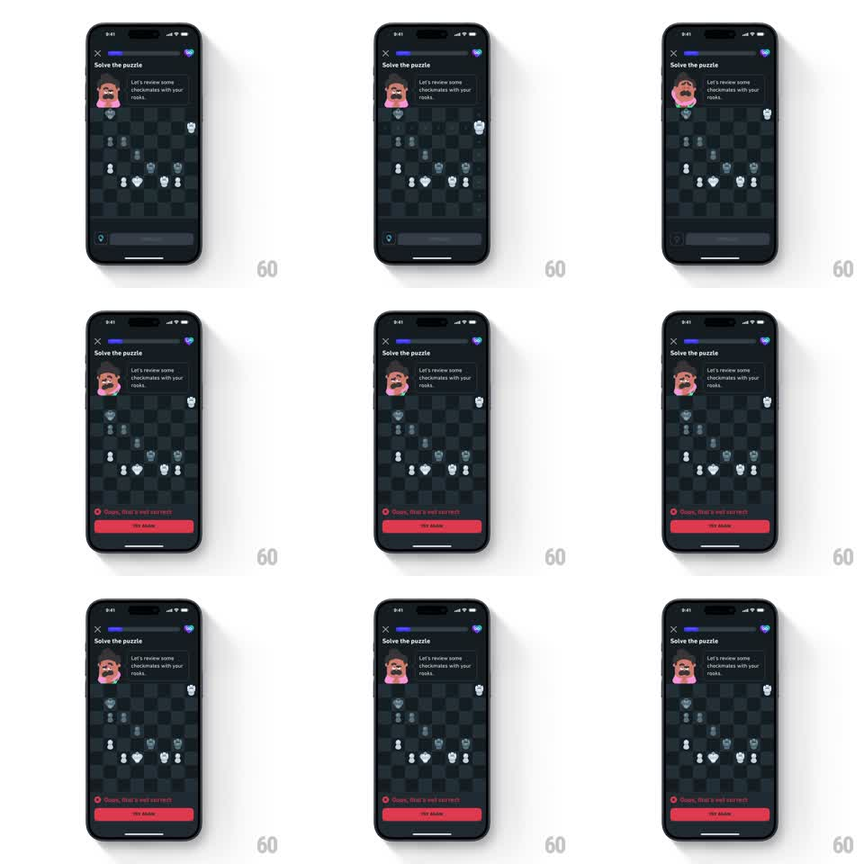

Media
Frame-by-frame

Rebuild this interaction 1:1: Duolingo Chess's wrong-move feedback - on the dark puzzle screen, an incorrect move snaps the piece back, the coach avatar slumps disappointed, and a red "Oops, that's not correct" sheet springs up from the bottom with a TRY AGAIN button.

Rebuild this interaction 1:1: Duolingo Chess's wrong-move feedback - on the dark puzzle screen, an incorrect move snaps the piece back, the coach avatar slumps disappointed, and a red "Oops, that's not correct" sheet springs up from the bottom with a TRY AGAIN button. ## Integration Integration: stack-agnostic spec - springs given as stiffness/damping, timed motions as duration + curve; map every value to your framework and animation library of choice. ## Scene Dark chess puzzle screen. Header: close X, purple progress bar, gem counter. Coach avatar with the bubble "Let's review some checkmates with your rooks." Center: dark chessboard with pieces. Bottom: gem row and input area. Error state: red sheet with an X-circle icon, "Oops, that's not correct", and a red TRY AGAIN button. ## Motion spec Pattern: error sheet with mascot disappointment. - On the wrong drop: the piece snaps back to its origin square (spring ~380/22, 200ms) and the target square flashes red (150ms). - The board gives a short horizontal shake (translateX +/-4pt, 2 cycles, 160ms). - The coach avatar droops (translateY +4pt, brows drop, 250ms ease-out) and its bubble stays put. - The red sheet slides up with a spring (~300/18, overshoot ~6pt, 350ms); the X-circle icon pops (scale 0 -> 1.1 -> 1.0, 180ms). - TRY AGAIN press: button compresses (scale 0.95, 100ms), the sheet slides back down (250ms ease-in), and the coach perks back up (200ms). ## Calibration - Red is reserved for the sheet and the square flash - the rest of the screen keeps its dark calm. - The spring on the sheet is soft; errors should feel recoverable, not alarming. ## Reduced motion Piece snaps back instantly; no shake; sheet fades in over 200ms. ## Don't miss - The coach's disappointment is posture, not a face swap - a small droop sells it. - The progress bar does not regress on an error.